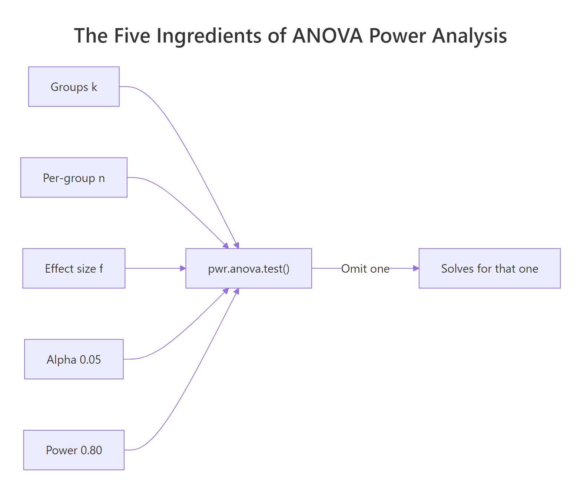
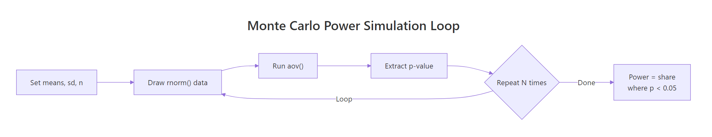

Power Analysis for ANOVA in R: pwr.anova.test() & Simulation Study
Power analysis for ANOVA tells you the sample size needed to detect a real group-mean difference with a given probability. In R, pwr.anova.test() solves the math, and a Monte Carlo simulation validates it against your actual design assumptions.
Why does ANOVA need a power analysis before you collect data?
When you run a one-way ANOVA with too few observations per group, a genuine mean difference can stay buried under sampling noise. The F-test then fails to reject a null that is actually false, and you walk away with a non-result that isn't really a non-result. Power is the probability of catching the real effect when it exists. Fixing a low-power design before the study is a calculation. Fixing it after is a rerun with fresh participants and fresh funding.
Let's put a number on it. Suppose you plan three groups with 15 subjects each and expect a medium-sized difference. How often would that design actually detect the effect?
The numbers are sobering. With 15 per group you have roughly a 24.5% chance of flagging a medium effect and only a 6.5% chance of flagging a small one. A large effect still only hits 57.6%. That tells you this design is underpowered for anything but a very obvious difference, and publishing a null from it says almost nothing about whether the effect is real.
Try it: Recompute power for the same design (k=3, n=15, alpha=0.05) but bump the effect size to f=0.50 (very large). Assign the result to ex_power_vlarge and round to 3 digits.
Click to reveal solution
Explanation: pwr.anova.test() returns a list; the $power slot extracts the computed power value. Even at a very large effect, n=15 still misses roughly one in four true effects.
How do you find the required sample size with pwr.anova.test()?
Turn the question around. Instead of asking "what power do I get from 15 subjects", ask "how many subjects do I need for 80% power". The function signature is the same, but this time you omit n and supply power. Whatever argument you leave out is the one R solves for.
You need about 53 subjects per group, so 159 total across three groups. The 52.40 number is the exact mathematical threshold; round up, never down, because rounding down pushes power below your target. The function prints all five values and marks the one it solved for, which is a convenient double-check.
Next, let's see how this required n behaves across effect sizes. Power scales steeply with f, so small shifts in your assumed effect produce big shifts in sample size.
The cost curve is brutal. A small effect demands roughly 15x more subjects than a large one to hit the same 80% power target. That's why over-optimistic effect sizes are the most common source of underpowered studies: a researcher guesses "medium" when the literature supports "small", collects 50 per group, and wastes the study.

Figure 1: The five ingredients of a power analysis. Supply four, and pwr.anova.test() solves for the fifth.
pwr.anova.test() assumes a balanced design, so the returned n is per group. Budgeting a total N and then dividing by k is fine only if you can actually recruit evenly; otherwise use a simulation (covered below).Try it: Find the required per-group sample size for a 4-group study with f=0.30 at 90% power and alpha=0.05. Assign to ex_n_4groups.
Click to reveal solution
Explanation: More groups mean more comparisons and a stricter critical F, so each group still needs a respectable n even for a moderate effect.
What is Cohen's f and how should you pick a realistic value?
Cohen's f is the effect size metric pwr.anova.test() expects. Intuitively, it measures how spread out the group means are relative to the within-group noise. Groups that sit far apart on the scale of individual variation produce large f; groups that sit almost on top of each other produce small f.
The formal definition is the ratio of between-group standard deviation to within-group standard deviation:
$$f = \frac{\sigma_{\text{between}}}{\sigma_{\text{within}}}$$
Where:
- $\sigma_{\text{between}}$ = the standard deviation of the true group means around the grand mean
- $\sigma_{\text{within}}$ = the standard deviation of individual observations within each group (assumed equal across groups)
If you happen to have an expected $R^2$ (proportion of variance explained by group membership) from a similar study, the equivalent formula is:
$$f = \sqrt{\frac{R^2}{1 - R^2}}$$
Cohen published conventional benchmarks you can use when no prior data exists: 0.10 is small, 0.25 is medium, 0.40 is large. Treat these as last-resort defaults. Whenever you have pilot data or prior studies, compute f directly.
Here's a reusable helper that takes group means and the pooled within-group standard deviation and returns Cohen's f. Internally it computes the standard deviation of the group means (using the population formula, not the sample formula, consistent with Cohen's definition).
Now apply it to a pilot where three groups gave sample means of 50, 55, and 65, with a pooled within-group SD of 20.
That's roughly 0.31, which sits between medium (0.25) and large (0.40). The useful move is plugging this right back into pwr.anova.test() to see what sample size the pilot effect justifies:
So 35 subjects per group would suffice if the real effect matches the pilot. Using the default "medium" f=0.25 would have required 53 per group, an 18-subject-per-group overshoot that costs real money and time.
Try it: A pilot for a different study gave group means 100, 110, and 120 with pooled within-SD of 15. Compute Cohen's f and assign to ex_pilot_f2.
Click to reveal solution
Explanation: Same 10-unit spread between consecutive means, but half the within-group SD doubles the effect size. Tighter within-group variation makes the group difference easier to detect.
How do you validate power with a Monte Carlo simulation in R?
pwr.anova.test() assumes the classical ANOVA model: balanced groups, normal residuals, equal variances. If your real design violates any of those, the analytical power number is a rough approximation rather than the truth. A Monte Carlo simulation removes the trust issue by running your design thousands of times on synthetic data that mirrors your assumptions (or deliberately breaks them) and reporting the empirical rejection rate.
The recipe is three lines long conceptually: draw synthetic data for each group, run aov(), record whether p < alpha. Repeat a few thousand times and the proportion of rejections is your simulated power.

Figure 2: The Monte Carlo power simulation loop. Generate synthetic data, run ANOVA, count how often p < alpha.
Here's a compact implementation. The function takes the true group means you want to simulate, a common within-group SD, a per-group sample size, the alpha level, and how many simulations to run.
Now validate against the analytical result. The classic medium-effect scenario we solved above asked for about 53 per group. Let's set means 0, 0.25, 0.50 and SD 1 (which gives Cohen's f ≈ 0.204, close to medium) and simulate.
The two numbers line up within Monte Carlo noise, which confirms the analytical formula is trustworthy for this well-behaved design. The small gap (0.006) is sampling variability from using 2000 simulations; running 10000 would tighten the match further. Once you've seen a simulation and a formula agree on a clean case, you gain confidence that deviations in messier cases are signal, not bug.
Try it: Re-run the simulation with set.seed(2025) instead of 123. Save the result to ex_sim_seed2025. How much does the estimate move?
Click to reveal solution
Explanation: Different seeds produce slightly different draws, so the estimate wobbles within the Monte Carlo standard error. Both values bracket the true power.
How does power change with sample size and effect size (power curves)?
A single power number hides the shape of the tradeoff. A power curve plots power against sample size for several effect sizes at once, giving you a map of the design space instead of a point. You can read off the minimum n that clears 80% power for each effect size, spot where the curve flattens (diminishing returns), and see how much margin you have if your true effect turns out smaller than planned.
Build the grid by crossing every combination of n and f, then compute power for each cell. tidyr::crossing() makes this one call.
Now plot. One line per effect size, a horizontal reference line at 0.80, and axis scales that make it easy to read minimum n off the x-axis.
Where each line crosses the dashed 0.80 line tells you the minimum n for that effect size. The small-effect line (f=0.10) never clears 0.80 in this n range; you'd need to extend the x-axis to roughly 325 to see it cross. The large-effect line (f=0.40) crosses almost immediately, around n=22. This is the geometry behind the table of required sample sizes we computed earlier, shown as a continuous surface.
Try it: Rebuild power_curve adding a fourth effect size f=0.15 (between small and medium). Save to ex_power_curve4 and check the first row for n=30, f=0.15.
Click to reveal solution
Explanation: At n=30, f=0.15 sits between the small and medium curves. Adding intermediate effect sizes helps if literature reports effects between Cohen's benchmarks.
What about unequal variances and unbalanced groups?
pwr.anova.test() stops being exact the moment your design drifts from its balanced-equal-variance assumption. In practice, biological groups differ in variability (treatment and control often have different scatter), recruitment is uneven, and classical F statistics inflate Type I error under heteroscedasticity. Simulation is the right tool here because it runs your actual design, warts and all, and measures empirical rejection rates rather than assuming the math still applies.
The fix for unequal variances is Welch's one-way test, available via oneway.test(..., var.equal = FALSE). Welch adjusts degrees of freedom so the null distribution is correct even when groups have different SDs. Let's build a simulation that runs both tests on the same draws so we can compare.
Now run the scenario: three groups with increasing variance (SD = 1, 2, 3), balanced sample sizes of 30 each, and true means 0, 0.5, 1.0. Classical F is sensitive to this pattern because the within-group MSE mixes three different variances into a single pooled estimate.
Both tests detect the true effect at roughly similar rates here, but Welch's real advantage shows up at the null. Let's repeat with equal means (zero effect) to measure Type I error rather than power:
At a nominal 0.05, classical aov() rejects 7.9% of the time when the null is true. That's a 58% inflation in false positives. Welch sits at 5.1%, essentially on target. If your design has reason to expect unequal variances, defaulting to classical ANOVA silently biases your study toward false discoveries.
oneway.test(var.equal = FALSE) or simulate.Try it: Modify the simulation to use unbalanced sample sizes ns = c(10, 30, 50) at equal SDs of 1, means (0, 0.3, 0.6). What power does each test report? Save to ex_unbal_result.
Click to reveal solution
Explanation: With equal variances, classical and Welch match closely. Imbalance costs you power compared to balanced n, but doesn't corrupt Type I. The danger zone is imbalance plus heteroscedasticity together.
Practice Exercises
Three capstone exercises combining the tools above. Variable names start with my_ so they don't overwrite tutorial variables in the notebook.
Exercise 1: Plan a four-arm trial from pilot data
A pilot run for 4 treatment arms gave group means of 20, 23, 25, 28 with pooled within-group SD of 6. Use compute_cohens_f() to estimate Cohen's f, then use pwr.anova.test() to find the per-group sample size needed for 80% power at alpha=0.05. Save per-group n to my_n_4arm.
Click to reveal solution
Explanation: The spread of group means over the within-group SD gives f ≈ 0.488, a large effect. That translates to about 31 subjects per group, or 124 total.
Exercise 2: Build a helper that returns the minimum n for any effect size
Write a function my_min_n(f, k = 3, target_power = 0.80, alpha = 0.05) that returns the smallest integer per-group n such that pwr.anova.test() reaches at least target_power. Apply it to f values 0.12, 0.18, and 0.30 in a single sapply() call.
Click to reveal solution
Explanation: pwr.anova.test() directly returns the fractional n, so ceiling() gives the minimum integer that clears the target. No loop required.
Exercise 3: Simulate and visualize the p-value distribution
Simulate a 3-group design with means (10, 10, 12), SD=3, n=25 per group, 2000 draws. Collect all 2000 p-values from aov() and save to my_pvalues. Then (a) compute the proportion < 0.05 (simulated power), and (b) plot a histogram of the p-values. A well-powered study shows a spike near 0; a null study shows a uniform distribution.
Click to reveal solution
Explanation: The histogram skews heavily left because two of three groups genuinely differ. The proportion below 0.05 (0.601) is the simulated power. A null design would produce a flat histogram instead.
Complete Example: Planning a Meditation Study
A researcher wants to compare four meditation protocols on a stress score. A small pilot of 12 subjects split into a control group and a mindfulness group produced means of 30 and 25 with pooled SD of 8. Plan the full four-arm study end-to-end.
Step 1: Estimate Cohen's f from the pilot. The pilot only had two conditions, so use the pairwise difference to anchor an expected group-mean spread for the full four-arm design. Assume the four future arms will have means spanning roughly (30, 28, 26, 25).
Step 2: Solve for required sample size.
So 47 per group, 188 total across four arms. That becomes the recruitment target.
Step 3: Validate with a Monte Carlo simulation. Use the planned means and pilot SD to run the design at n=47 and confirm the analytical result.
The simulation lands right at 0.80, confirming the analytical plan under the balanced-equal-variance assumption.
Step 4: Stress-test with heteroscedasticity. What if meditation groups have lower within-group variance than control? Re-run allowing SDs 8, 7, 6, 5.
Both tests clear 0.80, and Welch stays close to classical F. The plan is robust. The researcher recruits 47 per group, commits to Welch ANOVA in the analysis plan, and has a simulation record in the registered protocol.
Summary
| Task | Function | Inputs | Returns |
|---|---|---|---|
| Analytical power | pwr.anova.test() |
k, n, f, sig.level, power (omit one) | Solves for the omitted parameter |
| Compute f from pilot | compute_cohens_f() (custom) |
Group means, within-group SD | Cohen's f |
| Simulate power | sim_anova_power() (custom) |
Means, SD, n, nsim | Empirical power estimate |
| Handle unequal variance | oneway.test(var.equal = FALSE) |
formula, data | Welch F-test |
| Stress-test design | sim_welch_vs_aov() (custom) |
Means, SDs, ns, nsim | Power/Type I for both tests |
Key takeaways:
- Run power analysis before data collection, not after a non-result.
- Cohen's f benchmarks (0.10/0.25/0.40) are last-resort defaults. Compute f from pilot or prior literature whenever possible.
pwr.anova.test()is fast and exact for balanced, normal, equal-variance designs.- Simulation validates the analytical answer and is the only honest tool for unbalanced or heteroscedastic designs.
- Welch's test (
oneway.test(var.equal = FALSE)) protects Type I error when groups have different variances; register it in advance rather than switching after seeing the data.
References
- Cohen, J. Statistical Power Analysis for the Behavioral Sciences, 2nd ed. Routledge (1988). Chapter 8 on F tests.
- Champely, S.
pwrpackage reference manual. Link - Champely, S. pwr vignette: Getting Started with the pwr package. Link
- Lakens, D., & Caldwell, A. R. Simulation-Based Power Analysis for Factorial ANOVA Designs. Advances in Methods and Practices in Psychological Science, 4(1), 2021. Link
- UCLA OARC. One-way ANOVA Power Analysis. Link
- UVA StatLab. Power and Sample Size in R: ANOVA chapter. Link
- Welch, B. L. On the Comparison of Several Mean Values: An Alternative Approach. Biometrika, 38(3/4), 1951. Link
- R Core Team.
power.anova.testdocumentation in base R stats package.
Continue Learning
- Statistical Power Analysis in R: broader overview of the
pwrpackage across t-tests, correlations, proportions, and regression, not just ANOVA. - One-Way ANOVA in R: the parent post covering how to actually run the F-test, check assumptions, and follow up with post-hoc tests once your powered study is done.
- Power Analysis Exercises in R: practice problems across the full family of power calculations, including sample size re-estimation and sensitivity analysis.